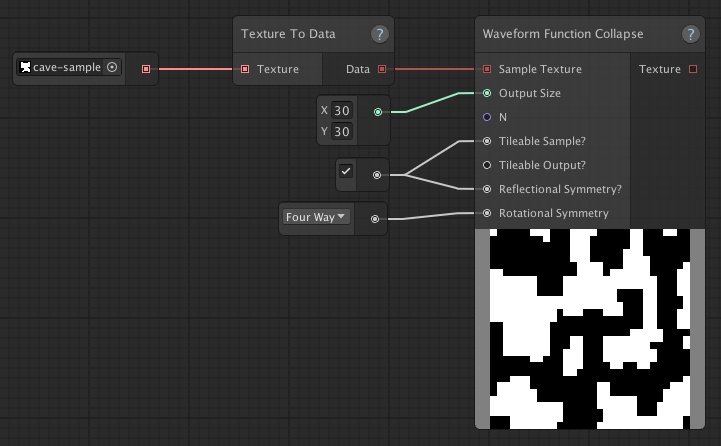
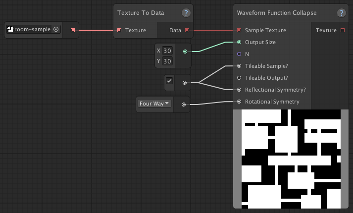
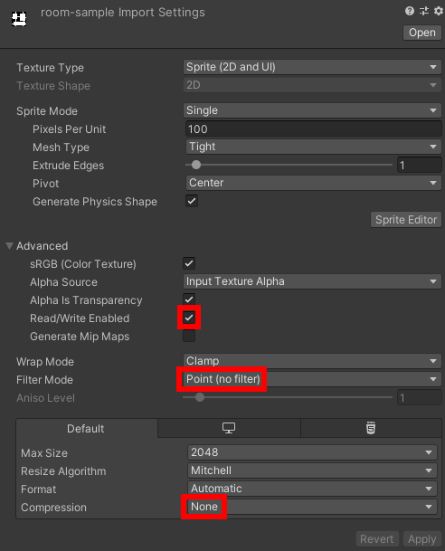
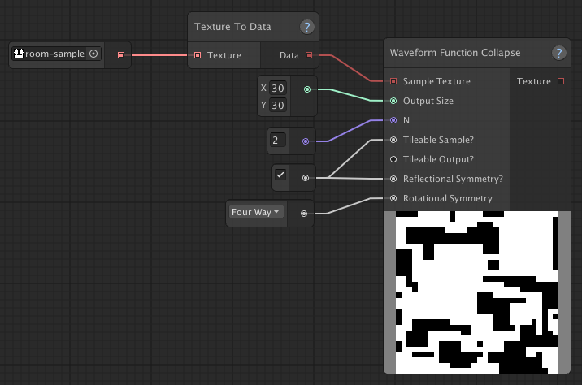
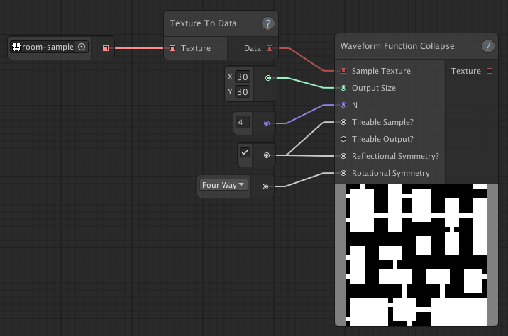
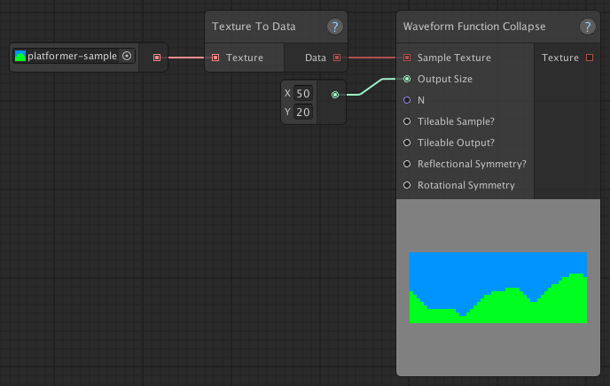
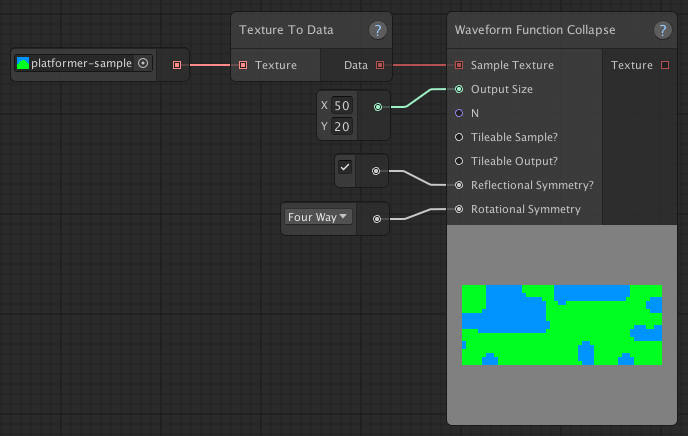

Sample-based maps
Let's take a look at how to generate maps based on user-provided samples using the Waveform Function Collapse node.
Waveform Function Collapse (WFC)
If you've read the Cave-like maps page or Room-based maps page, you might have already seen examples of how to use the WFC node.
WFC was originally developed by Maxim Gumin and it's a great algorithm to generate all kinds of different random patterns. If you're interested, you can check out the original algorithm here. If you want to know more about the Waveform Function Collapse node, you can check it out here in the node index.
In short, WFC allows you to generate a random pattern, which is locally similar to a sample pattern. The great thing about this, is that you can create many different types of patterns, while using the same algorithm.
For example, here's the WFC example graph from the Cave-like maps page.

Sample used:
Now, let's compare this graph to the WFC example graph from the Room-based maps page.

Sample used:
These are the exact same graphs, but they generate completely different outputs, simply by providing a different sample texture.
The sample texture
Because the sample texture should be very simple, you can make your own in almost any tool you want (something like Paint is perfectly fine) and simply add them to your Unity project.
You might want to make sure the sample texture consists of the same colors as those in the graph's Named Color Set. For the examples above, it would make sense to have named colors "Wall" and "Floor", where "Wall" is black and "Floor" is white.
Make sure you don't save your sample textures in a format that might mess up the colors due to compression, such as JPG. PNG would be a better choice.
You'll also want to adjust the sample texture's import settings:
- Set "Compression" to "None"
- Set "Filter Mode" to "Point"
- Check "Read/Write Enabled"

Texture To Data
You'll notice that the sample texture is passed through a Texture To Data node. This is necessary, because imported images are stored as Texture2D objects and Map Graph works with its own TextureData objects.
"Alikeness"
Adjusting the N value will allow you to tweak how much the output looks like the sample input. A higher value will extract bigger features from the sample texture, but will have a significant negative impact on performance. The default N value is 3, which strikes a good balance between performance and quality of the output, for most cases.
| Lower N (2) | Higher N (4) |
|  |  |
Tileable
Setting "Tileable Sample?" to true, will tell WFC that the input texture is tileable.
Setting "Tileable Output?" to true, will make WFC output a texture that's tileable.
These things do come with a performance cost, so you'll only want to enable these features, when needed.
Symmetry
Setting reflectional symmetry to true, will tell WFC to use mirrored versions of all the patterns it extracts from the sample texture.
Setting rotational symmetry will tell WFC to use rotated versions of the extracted patterns. Setting it to Two Way will create an additional 180 degree rotated version. Setting it to Four Way, will create three additional versions rotated by 90, 180 and 270 degrees.
Adding reflectional and rotational symmetry gives you more variety in the output, but doesn't always lead to desirable output.
For example, if you'd want to generate a level for a side-scrolling game, using this sample: , enabling symmetry probably won't produce the desired result.
| No Symmetry | Symmetry |
|  |  |
Performance Tips
One of the disadvantages of using WFC over more traditional techniques such as Cellular Automata and BSP trees, is that it requires a lot more performance. Depending on the parameters, it can take some time to run.
Tips to avoid performance issues:
- Don't use a larger sample texture than necessary. For example, the sample textures shown above are 16x16 pixels in size.
- Keep N small. It's set to 3 by default and that usually produces desirable results.
- Setting the sample and/or output as tileable will negatively impact performance, so only enable that if you need to.
- Same goes for reflectional and rotational symmetry.
- Keep the output size as small as possible.
- Enable "Debug Info" to see how much time the Waveform Function Collapse node takes to complete. This is very useful to see the effects on performance of any changes you make.